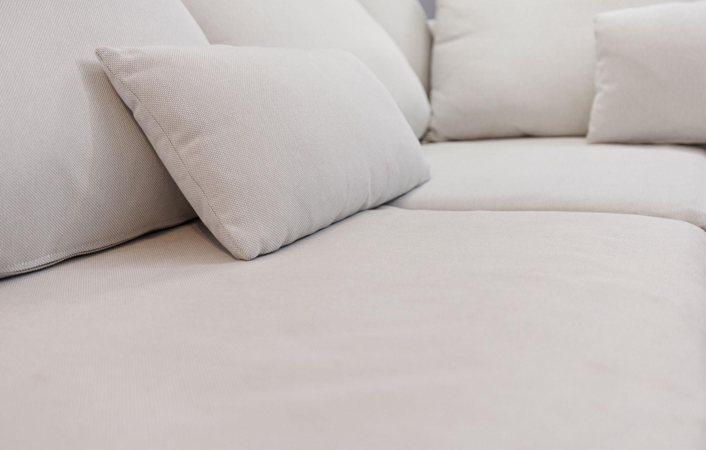
01 • Natural FibreCotton Weaves
Soft, breathable natural yarn that requires pH-balanced moisture control to prevent cellulosic browning or shrinkage.
Discover a smarter approach to sofa and upholstery care with professional cleaning designed around your furniture.
No single cleaning method is safe for every upholstery weave. Cleaning protocols always depend on manufacturer care instructions (W, S, W/S, X, L) and current fabric condition. Select a fabric below to inspect its care considerations.

01 • Natural FibreSoft, breathable natural yarn that requires pH-balanced moisture control to prevent cellulosic browning or shrinkage.
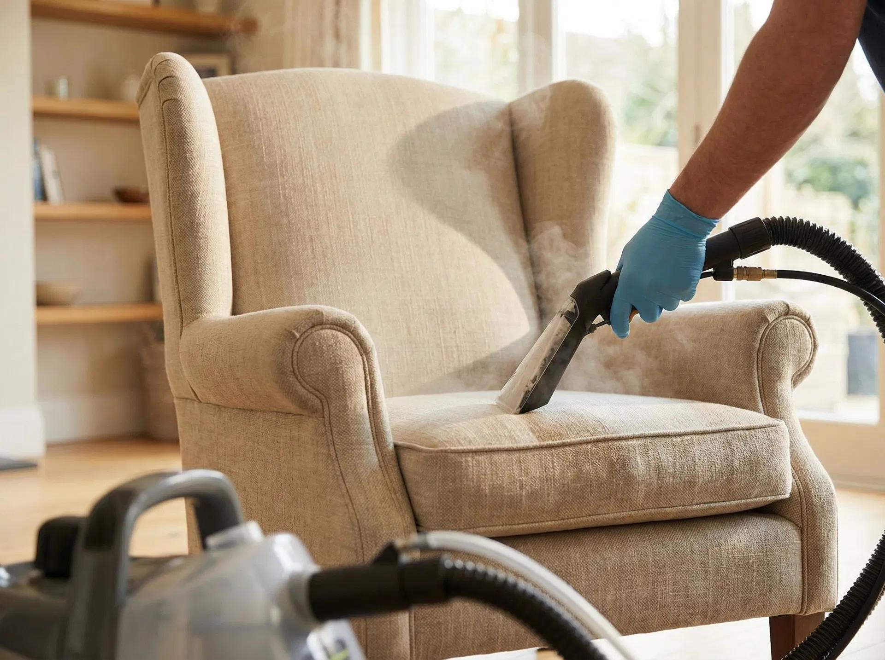
02 • Bast FibreTextured organic weave sensitive to water rings and high-heat agitation; treated with low-moisture mist or solvent-safe care.
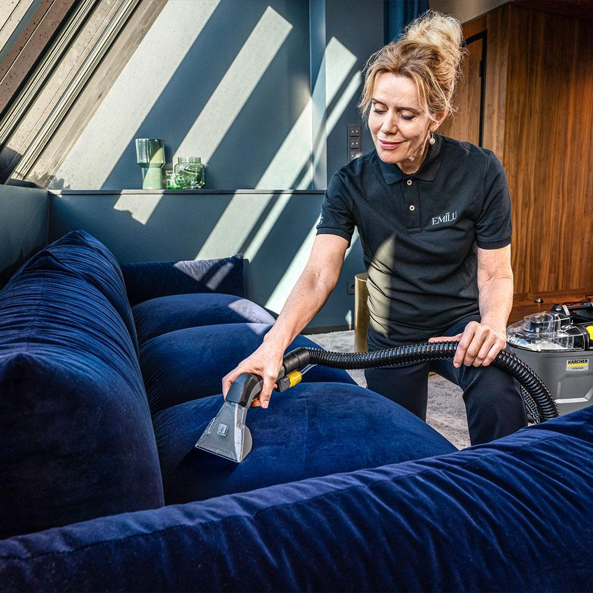
03 • Cut PileLuxurious raised pile requiring delicate directional extraction and post-clean carding to preserve plushness and sheen.
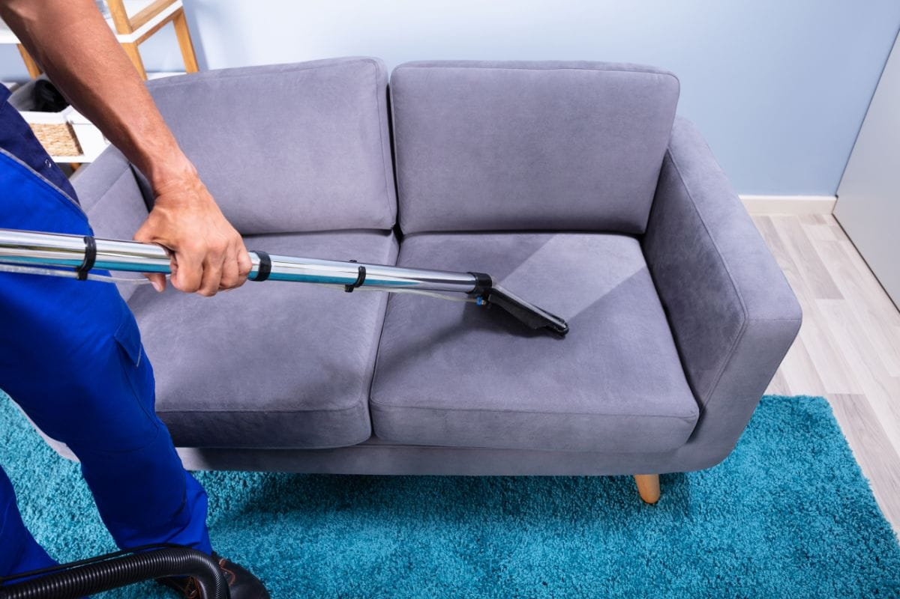
04 • Synthetic WeaveDurable water-safe synthetic fabric that responds excellently to oil-emulsifying pre-sprays and deep hot-water rinse extraction.
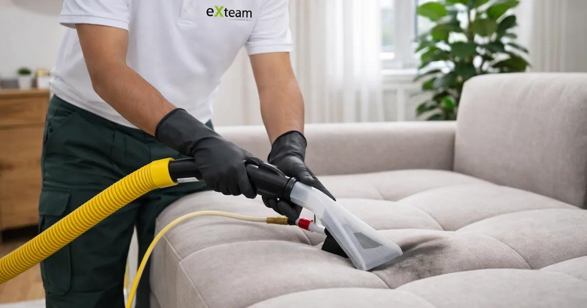
05 • Ultra-Fine FilamentTightly packed synthetic filaments that trap fine dust and oils; restored with residue-free foam and dual-pass suction.
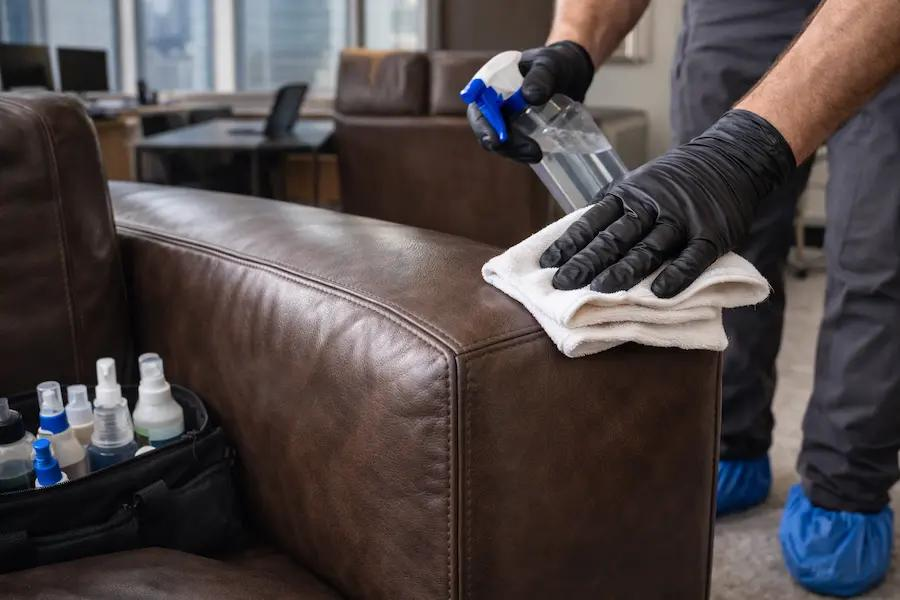
06 • Natural HideNever steam-cleaned; hand-treated with pH-neutral hide cleansers and replenished with protective conditioning balm.
Natural cotton fibres absorb liquid spills rapidly and can experience cellulosic browning or shrinkage if over-wetted with high-alkaline solutions.
We perform a fibre-burn and dye-stability check first, followed by pH-balanced low-moisture spray extraction and immediate high-velocity airflow grooming.
Click any of the four common stain scenarios below to inspect general first-response guidance and how our technicians approach treatment.
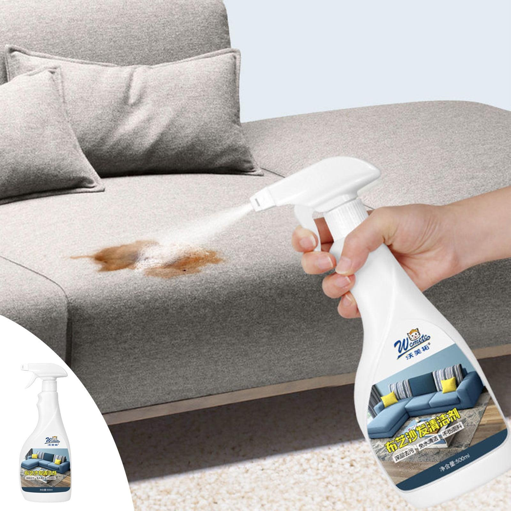
01 • Tannin SpillsDark roasted tannins and milk sugars that bond to light-coloured sofa cushions if rubbed or heated prematurely.
Inspect Guidance →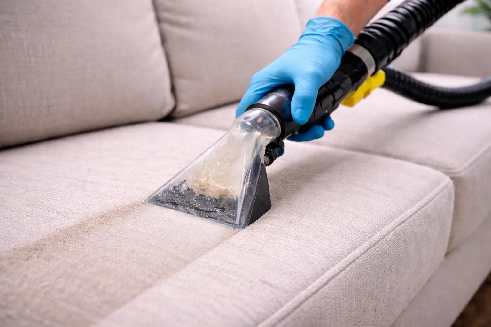
02 • Organic & OilCooking oils, sauces, and dining spills that require multi-stage enzymatic breakdown before hot-water rinsing.
Inspect Guidance →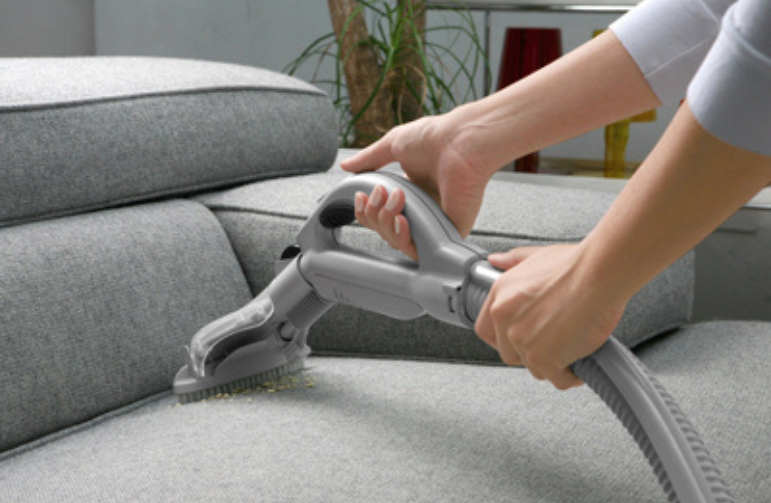
03 • Particulate SoilAbrasive household dust, crumbs, and outdoor grit trapped deep inside cushion piping and backrest crevices.
Inspect Guidance →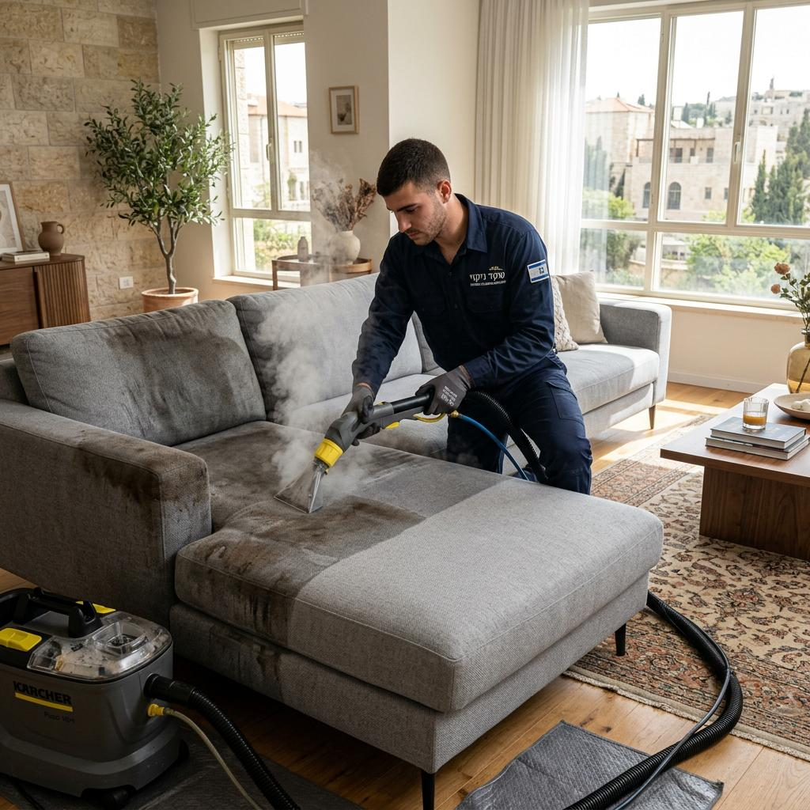
04 • Pet & TrafficMuddy paw tracks, body oils, dander, and biological spots requiring odour neutralization and deep extraction.
Inspect Guidance →First-Response Home Guidance:
Hot beverages penetrate both the outer weave and inner cushion ticking. Rubbing spreads tannins wider; blot gently with a white cloth and avoid household bleach.
Professional Verdant Treatment Approach:
We apply a slightly acidic tannin-reducing spotter, allow a 10-minute dwell to unbind the pigment, and extract vertically using a transparent upholstery nozzle.
Select each stage of our 5-step process below to explore how we inspect, pre-treat, agitate, extract, and groom your furniture.
Every appointment begins with a seam-by-seam walkthrough. We inspect manufacturer care tags (W, S, W/S, X), test inconspicuous areas for colourfastness, and map existing wear, sun fading, and stains.
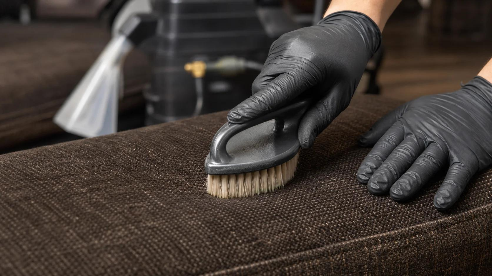
Loosening surface soil along textured brown weave fibres without abrading yarns.
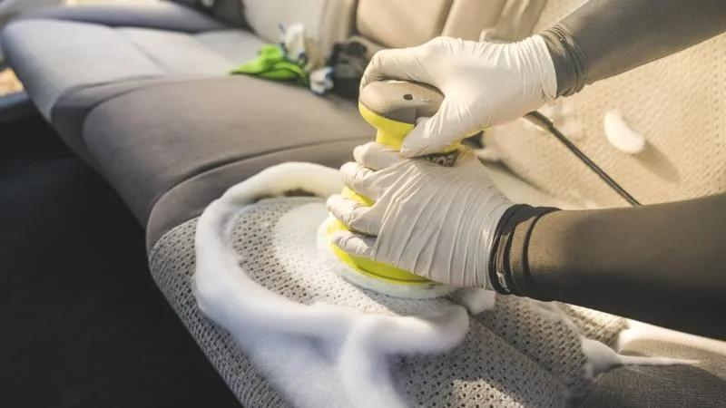
Encapsulating low-moisture foam treatment suspending deep cushion oils prior to extraction.
Choose a furniture category below to view tailored appointment durations, sample starting rates, and direct booking links.
Complete cushion, backrest, armrest, and frame upholstery cleaning tailored to linen, cotton, velvet, microfiber, or leather sofas.
Explore four sample upholstery-care solutions and extraction tools used in our fabric-safe cleaning workflows.
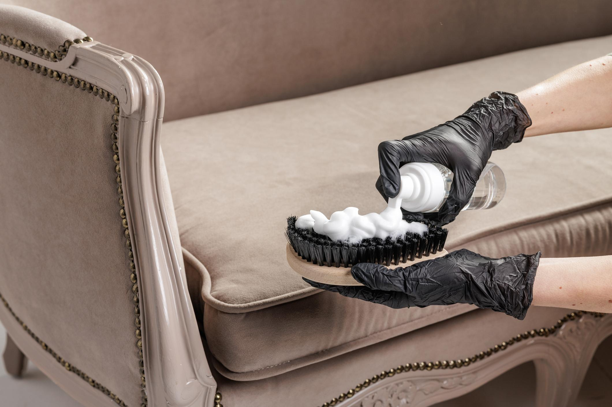
Sample Care ItemLow-moisture encapsulating micro-foam designed to suspend surface oils on delicate velvet and natural-fibre weaves.
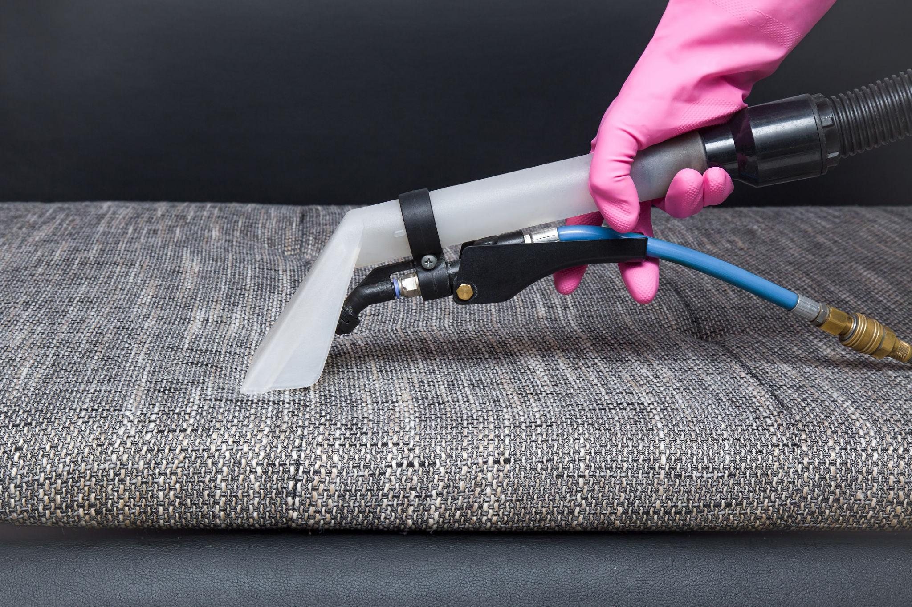
Sample Care ItemPost-cleaning breathable fibre shield that gives homeowners extra time to blot accidental beverage drips on textured weaves.
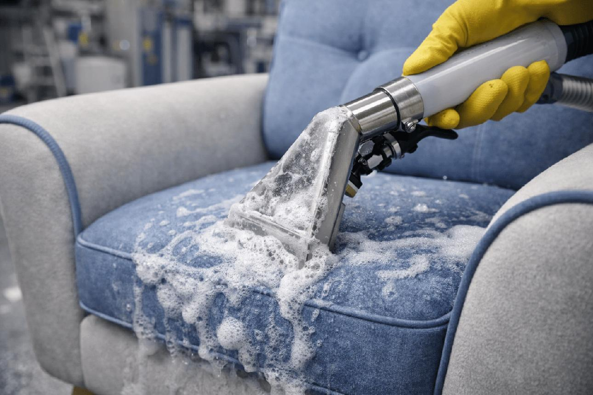
Sample Care ItemTargeted foaming spot release solution formulated to help lift localized food and beverage marks during extraction.
Commercial spray-extraction hardware pairing calibrated rinse pressure with immediate high-lift moisture recovery.
Configure your preferred service, furniture quantity, date, and sample time window below—your selections carry straight into our full booking portal.
Whether your living room sofa needs a seasonal refresh or targeted stain recovery, our fabric-conscious process brings comfort back to every seat.